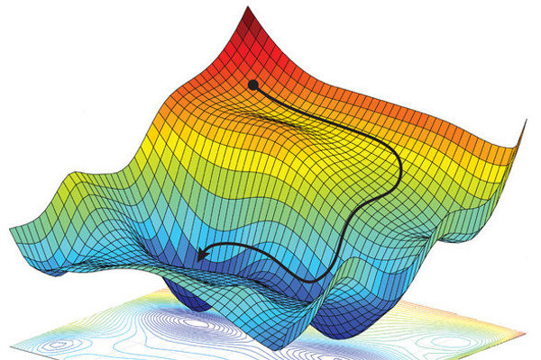
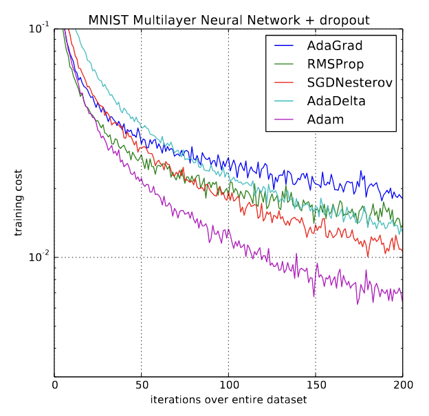

Loss Optimizers
Understanding the foundational components of neural networks can make learning this complex subject more engaging. In the early stages of learning, we can even avoid using frameworks like PyTorch or Keras and build networks from scratch of course with the help of numpy. While the process can be enjoyable, building a multilayer network from scratch without these advanced tools is also quite challenging. However, if someone manages to do it and gradually begins to grasp the underlying concepts, it becomes a highly rewarding and worthwhile investment.
When it comes to training the neural network gradient descent is the goto approach provided that the cost function (loss function) has to be continuous and differentiable. Since processing the entire dataset and updating the weights using gradient descent is practically infeasible, people use a stochastic approach using batches of training data and update the weights after processing each of these batches. This approach is famously called stochastic gradient descent or SGD. In this post I am going to discuss the different approaches to stochastic gradient descent. The process of updating weights is a simple mathematical operation happening on all the weights (and biases) in the neural network. But certain problems arise which need clever solutions because the simple concept of tuning the knobs isn't that simple.
The weight updates in a neural network can be represented using the following simple equation.
\[W = W - \text{lr} \cdot \frac{dL}{dW}\]lr - learning rate
L - loss function
W - weights, represented as a metrics
From a high level the process is very simple. All we need to do is to minimize the loss function value, in order to minimize any mathematical differentiable function we just need to travel to a point where the derivative becomes zero. In mathematics this point is called minima (local minima). Note that the derivative will be zero even at maxima but we are trying to minimize the loss therefore we are not interested in maxima. The loss function values that we use for SGD creates a landscape in the multi dimensional space called loss landscape. There are so many hills and depressions in the landscape with varying depths and heights. Our aim is to reach the deepest point in the loss landscape.

The blind walker
Since visualizing a multidimensional space is outside our imagination for the sake of simplicity let's do a thought experiment. Suppose there are only two weights in the network representing a point in the XY plane. Then average loss with respect to the weights for each batch forms a 3D landscape as shown in the image above. Imagine that you are blind walker in such an imaginary landscape with a walking stick. How do you figure out the deepest point in the landscape ? This is a hard problem even for a person with vision. There is no aerial view available to help the person because nobody has explored the landscape before.
Fixed learning rate
One way is that the blind walker can use his stick to figure out the uphill or downhill direction with respect to his current position. He can move in the downhill direction with a fixed step size. Eventually he will reach a point where there is no more slope and that is going to be the center of a depression. But the problem is that this is not necessarily the deepest point in the landscape. From that point if he doesn't use a bigger step size and jump out of the pit he will be stuck in that pit and won't be able to move further and explore other parts of the landscape. But if he uses a larger step size he might be jumping forever across the landscape and never reach the bottom of any of the pits in the landscape.
Here you should have understood intuitively that the pits are the local minima of the loss landscape. At the bottom of any pit the slope is zero, that is the derivative at that point will become zero. So from our equation above the second term becomes zero and the weight will not be updated further. Our training will halt at that point with a stagnant loss value. Which simply means that our network learns no further.
Decaying learning rate
From the previous scenario it is clear that the step size can't be fixed, it has to be varying, ideally the step size has to be large enough to explore the whole landscape. Then we can explore and get an idea about the whole landscape and slowly reduce the steps to the deepest part of the landscape. In order to achieve this we can introduce a decaying learning rate that will start with a higher value (eg: 1.0) and then slowly becomes smaller and smaller as the number of iterations increases.
\[\text{lr} = \frac{\text{lr}_0}{1 + r \cdot \text{iterations}}\]r - hyperparameter determining the rate of decay.
lr0 - Initial learning with a higher value
lr - variable learning rate
iterations - number of iterations
Momentum in learning
With the new varying step size (lr) let's continue our thought experiment we can see that the person has traveled all over the landscape and finally figured the right depth. But there is a problem when there are any sharp edges in the landscape. The direction to follow might change sharply. This can make the path look like a walk of someone so drunk with no sense of direction. Such a walk will make the learning so slow, the walk without a sense of direction slows the blind walker from reaching the goal.
The problem here is that the walker was calculating his next step direction with respect to his current point without considering his past direction at all. What if he uses his past memory of the previous step and makes a move in the future direction ? This means that the person will take into account the momentum of his past and travel in the newly calculated slope. Say we represent his last move by a vector A and the new direction by vector B then by incorporating momentum he will travel in the resultant direction of A + B. This makes the path to the bottom most point much smoother even on sharp terrain.
Mathematically this means that we need to store the previous gradient vector and add the next gradient vector. We can also introduce a hyperparameter called momentum factor that decides the weightage to be given to the past momentum. This can be expressed as follows.
\(\beta_1\) - momentum factor
M - Momentum cache containing previous gradient
Here if we give a higher weightage say 0.9 to the momentum factor then we are adjusting the weight giving higher importance to our past knowledge. This approach greatly improves the efficiency of weight updates and results in much smoother convergence of the neural network.
Adaptive learning rate
Even after understanding many aspects of neural networks, I remained curious about how gradient updates actually work. I noticed that weights and biases were being updated uniformly using the same learning rate. This part felt like a black box to me, largely because the learning resources I had previously used didn't go into much detail about how weight updates are performed. However, I later realized that this isn't entirely accurate each weight is updated based on its own gradient value. A large gradient indicates that a small change in the weight can significantly affect the loss function. Conversely, if the gradient is small, a larger change in the weight is needed to have any noticeable impact on the loss. Since the goal is to minimize the loss by adjusting the weights, this distinction is crucial. Intuitively, this suggests that the learning rate should be inversely related to the magnitude of the gradient.
\[\text{lr} \propto \frac{1}{\left| \frac{dL}{dW} \right|}\]This thought process gave birth to an algorithm called AdaGrad (Duchi et al, 2011). AdaGrad introduced a mechanism so that the learning rate will be varied based on the gradient values of loss function with respect to each weight.
Here is how it can be imagined: our blind walker measures the slopes, if the slope is high then he will adjust the step size to be smaller, if the slope is low then he will increase the step size to be higher. Mathematically this can be achieved by modifying the learning rate as follows.
\[\text{lr} = \frac{\text{lr}}{\sqrt{G} + \epsilon}\]where G is a gradient cache accumulating squares of all the past gradients.
\[G = \sum_{i=1}^t g_i^2\]\(g_1^2,g_1^2 \dots g_i^2\) are the gradients of the past which we keep on accumulating on a gradient cache G.
\(\epsilon\) - a small constant to avoid the denominator becoming zero.
Note that here we are not using any momentum like before. This is a different approach than before. Here when the gradient is higher then G will also be higher and this will result in a small value of lr. If the gradient is small then the value of G will also be lower and this will result in an increase in the learning rate. But there is a small problem here: if the number of iterations increases the value of G will eventually go up and this will result in a smaller and smaller step size on an already decaying learning rate. Therefore at a higher number of iterations we will be facing the same problem of stagnant learning.
RMSProp an improvement over the AdaGrad
RMSProp (Tieleman & Hinton, 2012) algorithm is an improvement over the AdaGrad algorithm. This is introduced to tackle the problem that at a higher number of iterations the learning will eventually stop because of smaller learning rates. Let's check how RMSProp solves this problem. RMSProp modifies the way in which gradient cache G in AdaGrad accumulates. The modification is as follows.
\(\beta_2\) - Cache decay rate
This modification will force the cache G to grow at a much lower rate therefore the learning rate will be affected at a much slower rate than the AdaGrad algorithm. This enables the learning process continue smoothly.
Adam Optimizer
Finally all these understandings over time lead to the development of a new optimizer called Adam (Diederik, Jimmy 2015). The name Adam is derived from adaptive moment estimation not from the first bible man Adam. Adam combines the good parts of decay, momentum and AdaGrad algorithms. This has been the goto choice in many examples that I have seen. Once we understand mechanisms explained so far then Adam feels like a very natural tweak. Adam optimizer modifies the weight updates as follows.
\[W = W - \text{lr} \cdot \frac{\text{Momentum Term}}{\sqrt{\text{Cache Term}} + \epsilon}\]Where
\[\text{Momentum Term} = \frac{(\beta_1 \cdot M + (1 - \beta_1) \cdot \frac{dL}{dW})}{\text{Momentum Correction Term}}\] \[\text{Cache Term} = \frac{(\beta_2 \cdot G + (1 - \beta_2) \cdot \frac{dL}{dW}^2)}{\text{Cache Correction Term}}\] \[\text{Momentum Correction Term} = 1 - \beta_1^\text{iterations + 1}\] \[\text{Cache Correction Term} = 1 - \beta_2^\text{iterations + 1}\]This looks like a lot of equations but this isn't very difficult if you are able to follow the thought process followed in the post. Adam optimizer is like replacing the walking stick of the blind walker with a handheld device that determines the direction and step size of his next step.
The role of correction terms Momentum Correction Term and Cache Correction Term is insignificant at higher iterations because the value of correction term will become close to 1. But at lower iterations when the Momentum Term and Cache Term are having very small numerator the step size will be very small which is not desirable in the early iterations as mentioned earlier. This is called the cold start problem. Correction terms are used to avoid the cold start problem, division by correction term increases the step size in the early iterations of training making significant weight changes in the early iterations.

Let's conclude wih a look at the chart comparing the training cost of different strategies mentioned above. We can see that the Adam outperforms all other algorithms making it a much preferred choice.
Happy Learning